UML (Unified Modeling Language)
[TOC]
Unified Modeling Language，统一建模语言，可以在面向对象的分析与设计过程中标识元素，构建模块，分析过程并通过文档说明系统中的重要细节。
UML 图分类：1) 静态模型 Static Model；2) 动态模型 Dynamic Model
静态建模用于创建相关问题领域主要元素的视图，记录一个系统的静态特征，反映系统基础、固定的框架结构，包括：
- 用例图 Use Case Diagrams
- 类图 Class Diagrams
- 对象图 Object Diagrams
- 组件图 Component Diagrams
- 部署图 Deployment Diagrams
动态建模 用来展示系统的行为，包括：
- 时序图 Sequence Diagrams
- 协作图 Collaboration Diagrams
- 状态图 State Chart Diagrams
- 活动图 Activity Diagrams
其他 UML 元素：
- 包 Package
- UML 扩展机制，包括：1) 注释 Comments；2) 构造型 Stereotypes；3) 标记值 Tagged Values；4) 限制 Constraints
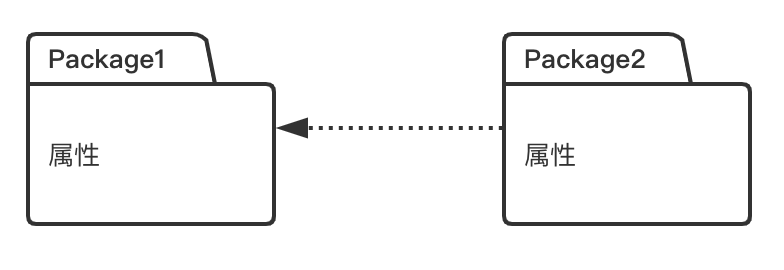
1 用例图
展示系统的核心功能和与其交互的用户，用户被称为“活动者 Actor”，椭圆是用例，表示用户能做什么事情，箭头由用户指向用例，可添加子用例，可标注优先级。
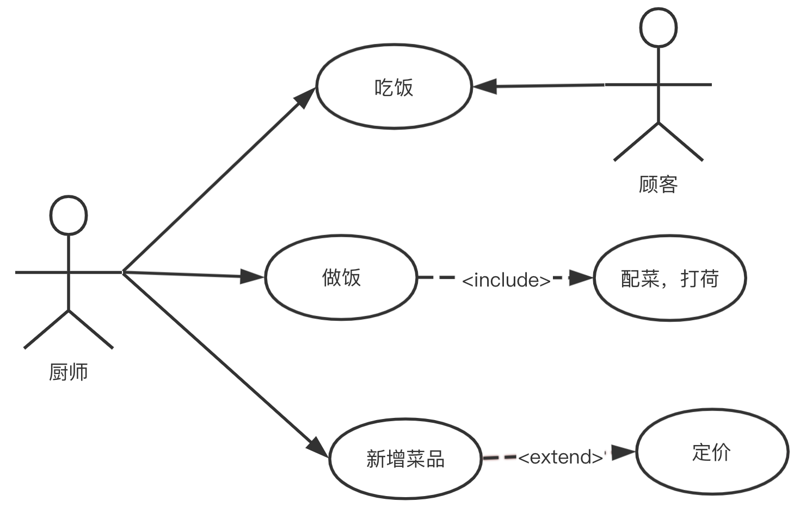
2 类图
描述类和接口的特征，以及对象之间的协作与交互关系。由一个或多个矩形区域构成，内容包括；1) 类型 Class，即类名；2) 属性 Attribute，成员变量；3) 操作 Operation，即成员方法。注意：
+表示 public，-表示 private；- Operation 里面放重要的业务方法，成员变量的 set() 和 get() 方法不用列出；
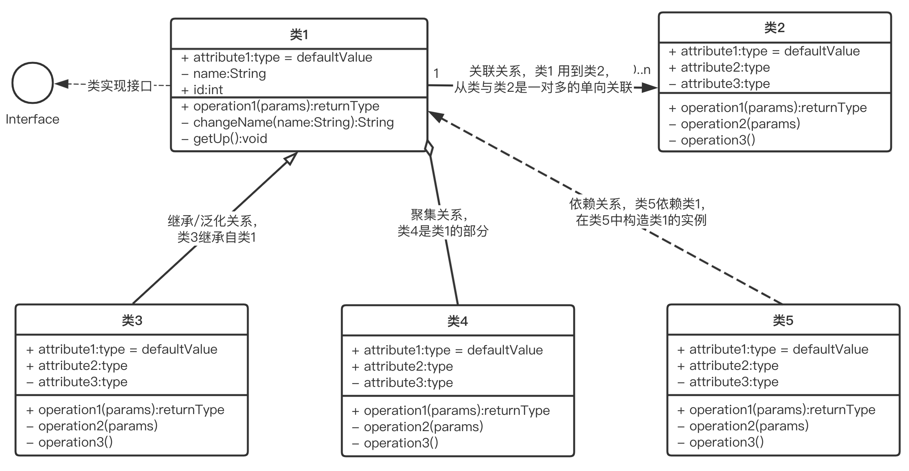
3 对象图
表现对象的特征及对象之间的交互。对象图中不包含操作内容，因为同一类的对象操作是相同的？对象代表单独的实体，之间的关系是一对一的，不涉及多重性。
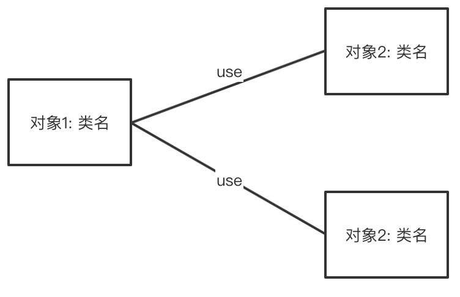
4 组件图 Component Diagram
描述的是系统在高层次上的架构视图，组件是系统或子系统中的独立封装单位，提供一个或多个接口。
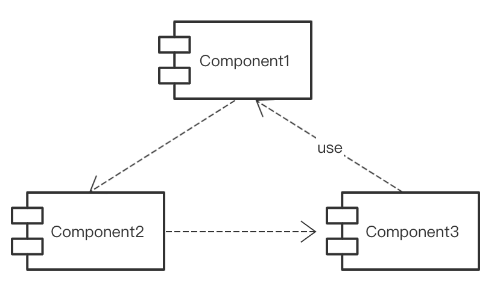
5 部署图 Deployment Diagram
描述用于部署软件应用的物理设备信息。
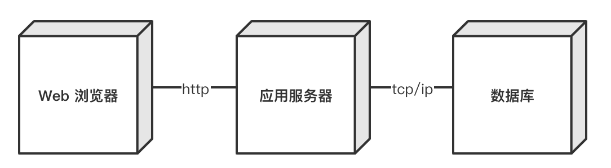
6 时序图 Sequence Diagram
在描述多个对象之间的交互信息时强调的是消息交互的时间顺序。
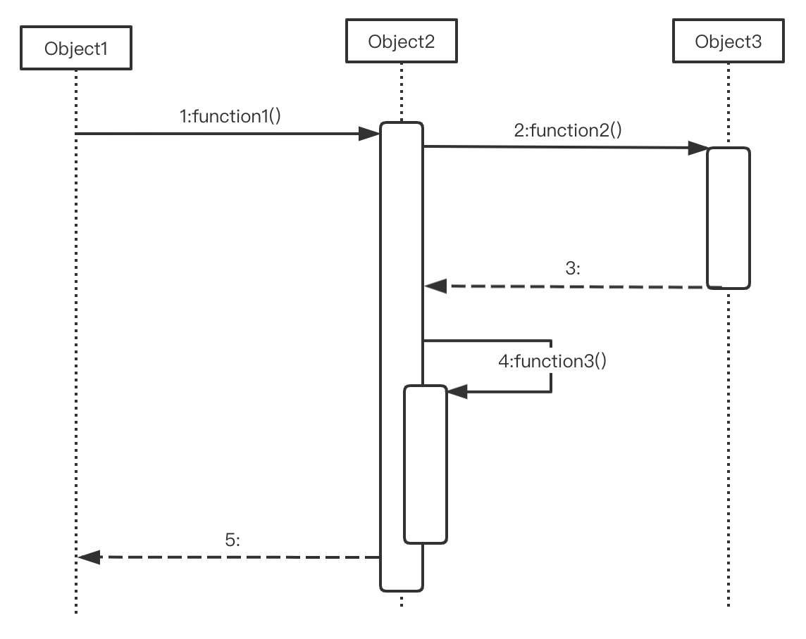
图中可以只有调用，没有返回值。
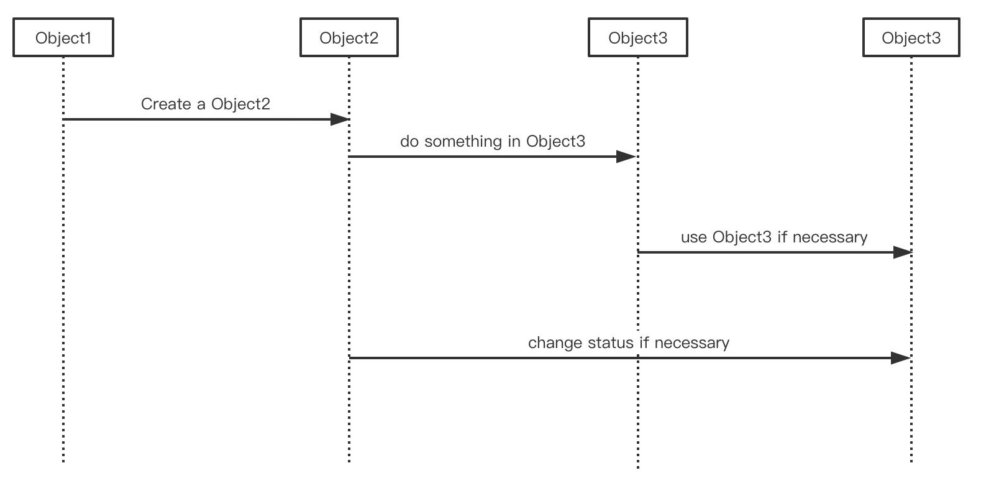
7 协作图 Collaboration Diagram
描述对象间的协作信息，强调参与信息交流的对象之间的组织关系
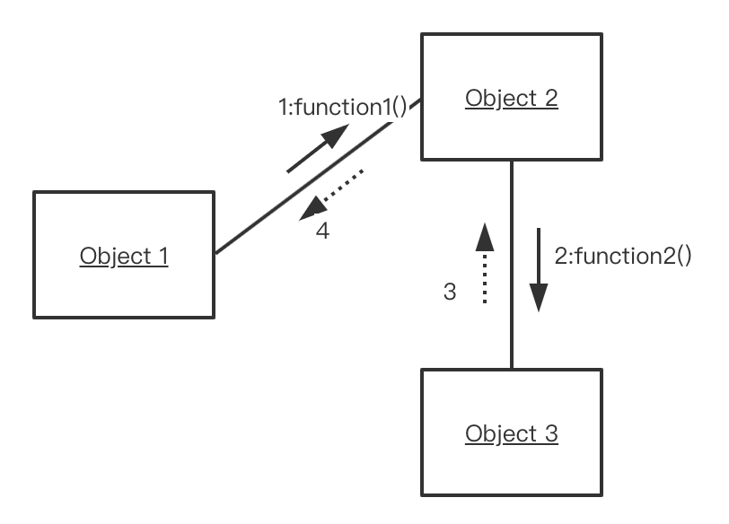
8 状态图 State Translation Diagram
状态是对象执行某项活动或等待某个事件时的条件，由成员变量维护。各状态之间由转移链接在一起，转移由某个事件触发后执行特定的操作，或评估是否是结束状态。
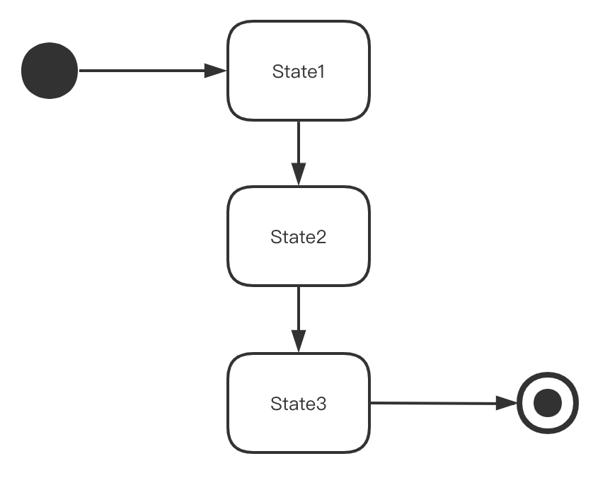
9 活动图 Activity Diagram
类似流程图：
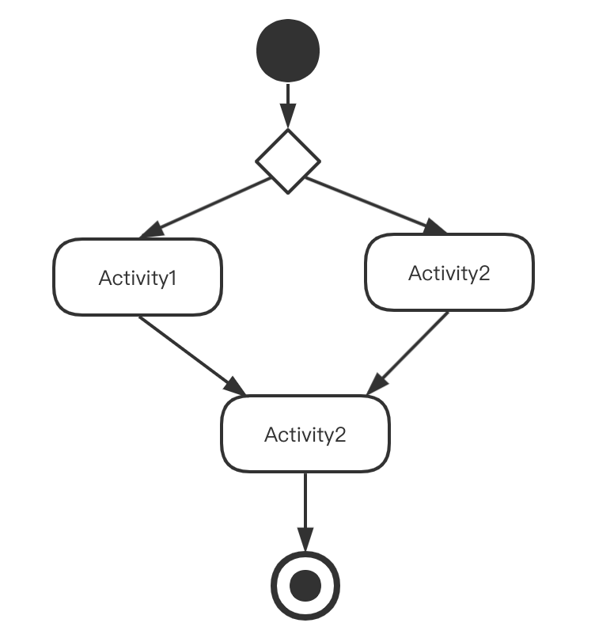